我的摄影主题涉及两个主要的部分——旅行和事件，但我所拍的照片既不是游记、也不是纪实，它们共同构成一种我想要传达的风景。我的一切作品都是基于某种幻想的，我在这种幻想下重构由真实的瞬间组成的世界。博物学家，这是一个我能想到的、在历史上最与此相近的一类人，旅行或者分享其他人的旅途、想象、挑选，最后用文字和绘图制作档案，丰富人们看得见的以及看不见的世界。我使用平常但具有启示性的图像完成这些工作，旨在说明，一切相似的、不相似的生活都是经历一场旷日持久的冒险，并在最终指向同一种安宁。
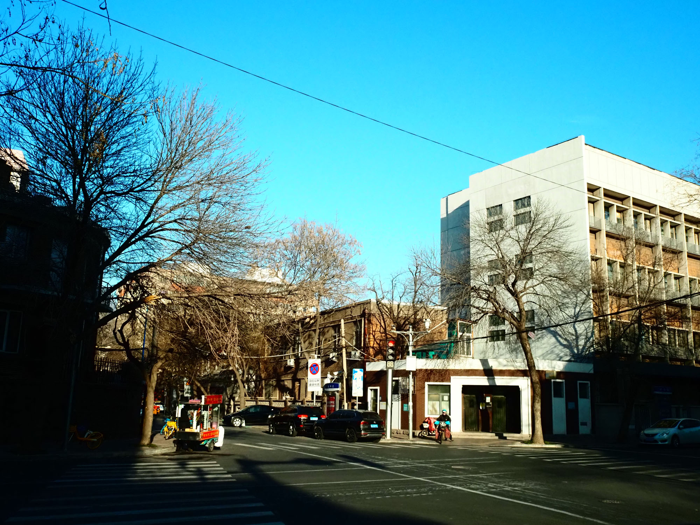
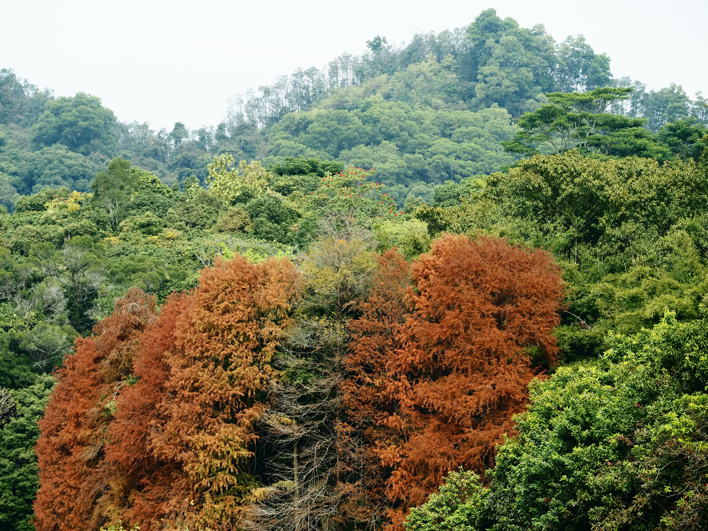
 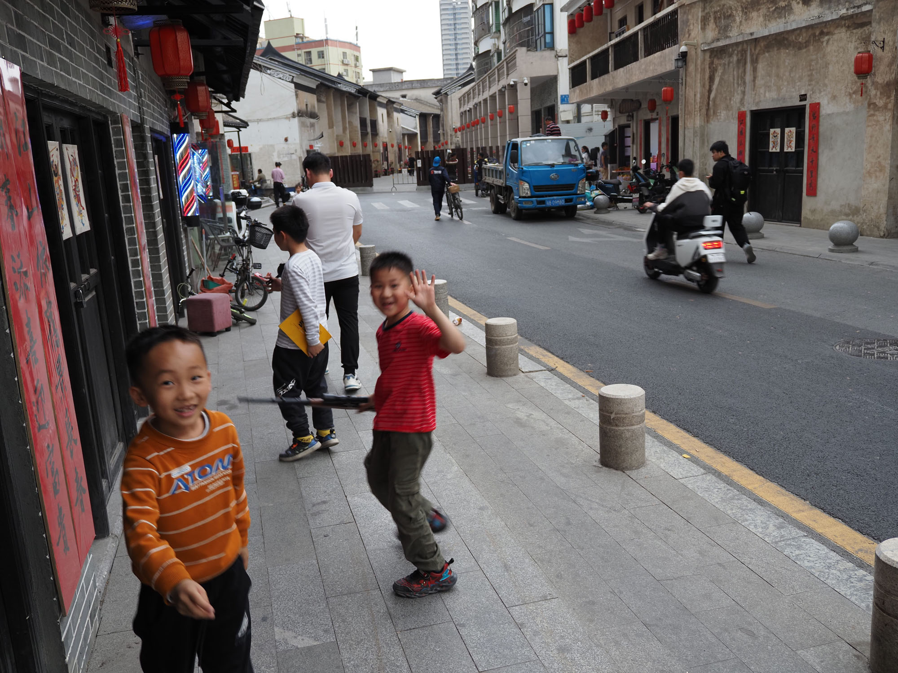
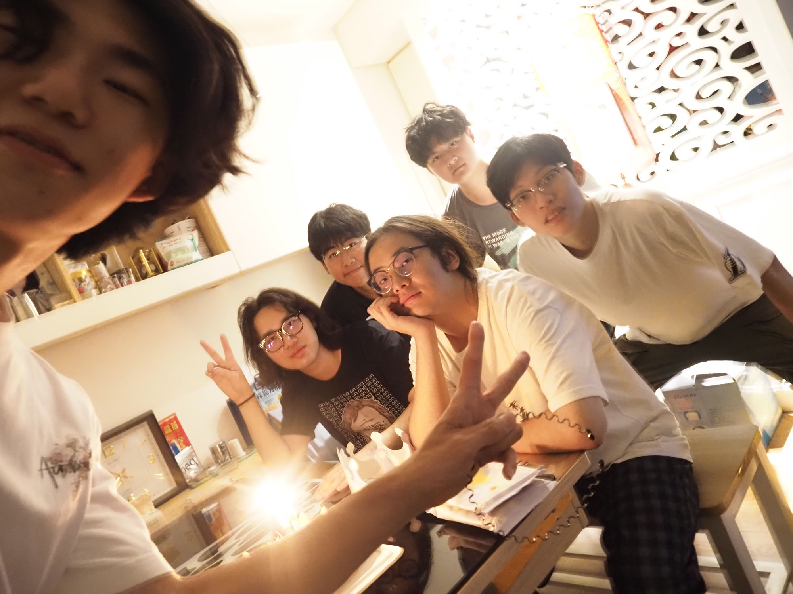
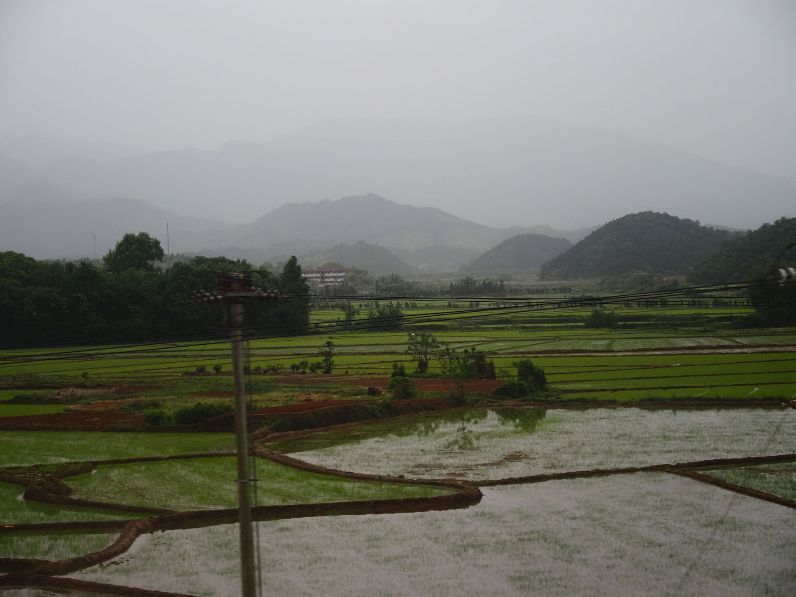
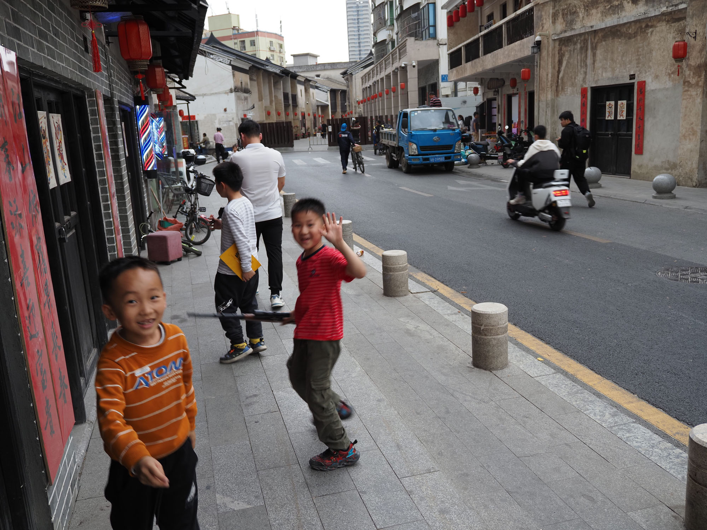
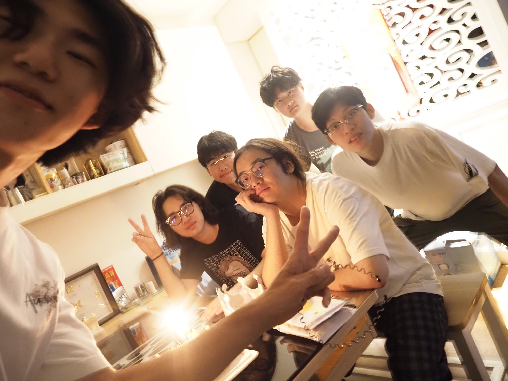
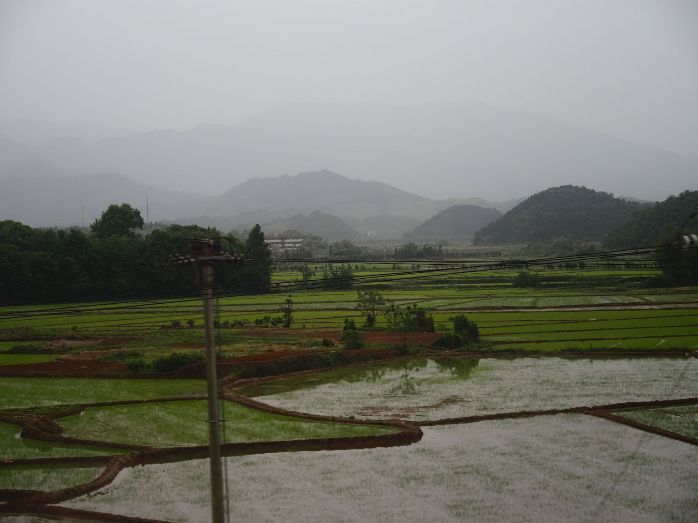
Fig:Sequence I-VII
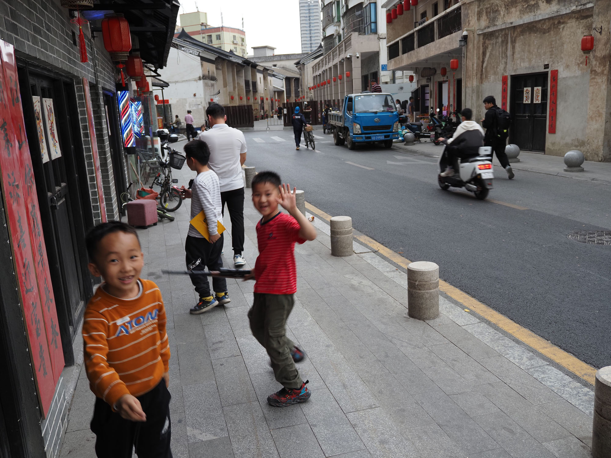
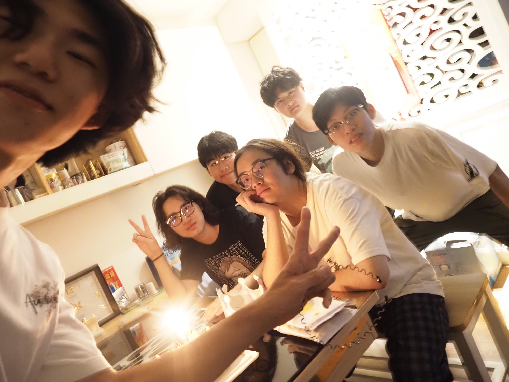
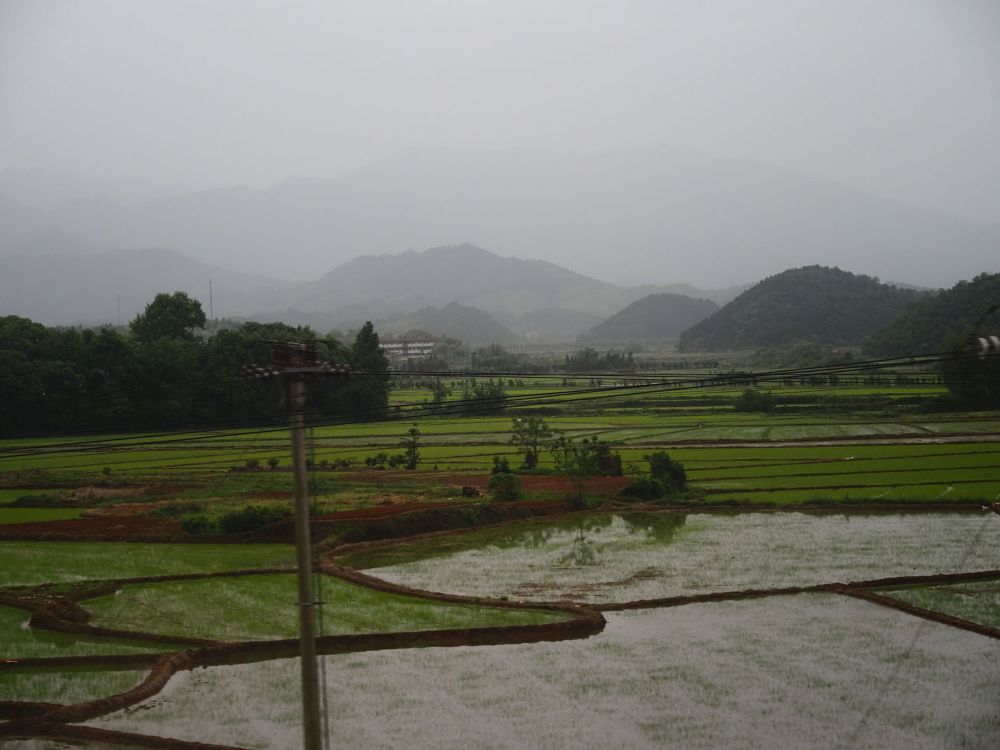